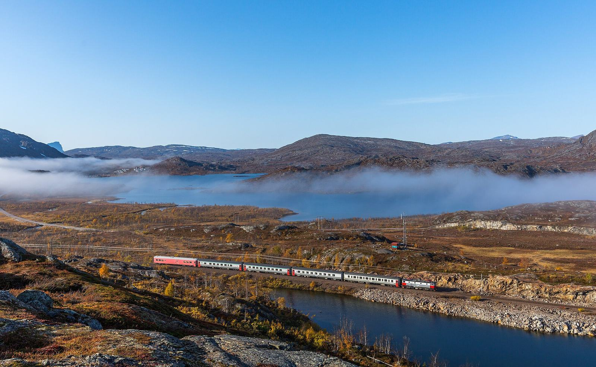
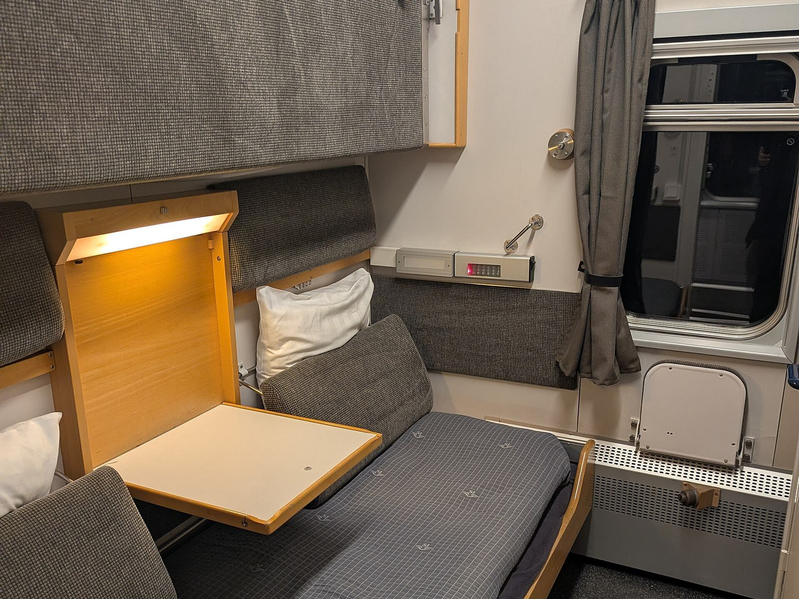

Nattåg
Kliv på på kvällen och vakna i fjällen, i Norrland eller i Tyskland. Vi har kört sovvagnar sedan 1886.
Välj hur du vill sova
Från en vanlig sittplats till en egen kupé med dusch.

Sittvagn, 2 klass
En vanlig sittplats för dig som klarar dig utan bädd.
Liggvagnskupé, 2 klass
En delad kupé med sex bäddar. Du bäddar själv.
Sovvagnskupé, 2 klass
Kupé för 1–3 personer med handfat. Dusch och WC finns i vagnens ände.
Sovvagnskupé, 1 klass
Kupé för 1–2 personer med egen WC och dusch. Frukost ingår.
Reser du ensam kan du också boka en plats i en delad kupé.
57 nattågsvagnar renoveras, bland annat med rullstolslyftar i sovvagnarna. 15 av dem var klara i oktober 2026.
Sträckor
Julresorna med nattåg till övre Norrland och Narvik, 13 december–10 januari, går att boka nu.
EuroNight till Hamburg och Berlin
Den 13 december 2026 är nattåget till Tyskland tillbaka. Vi kör tillsammans med RDC: Tågbolaget i Sverige och Danmark, RDC i Tyskland.
- Från 13 december: tre avgångar i veckan per riktning, varav två till Berlin under en övergångsperiod.
- Från 19 januari 2027: två avgångar i veckan till Hamburg, och en av dem fortsätter till Berlin.
Så köper du biljett
Resor till och med 31 januari 2027 säljs via nattexpressen.se och nachtexpress.de. Från 1 februari 2027 köper du biljetten på exempel.se, i appen, i DB Navigator och på bahn.de.